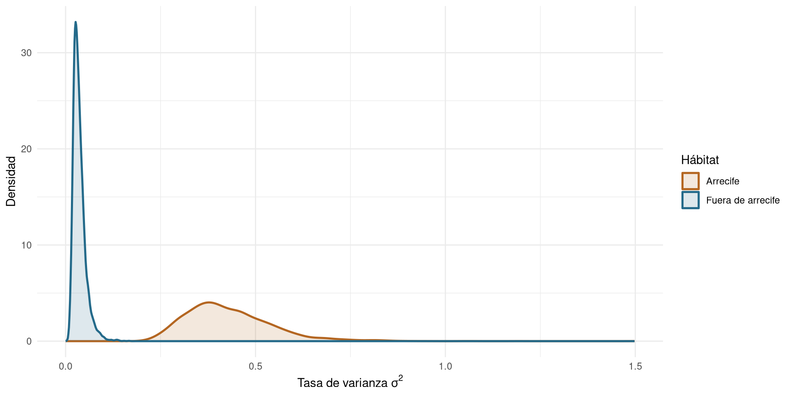
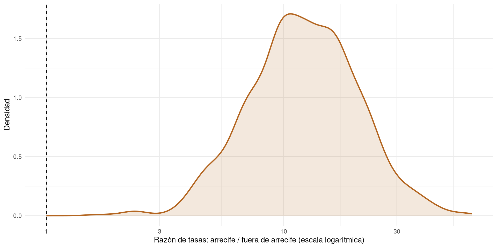
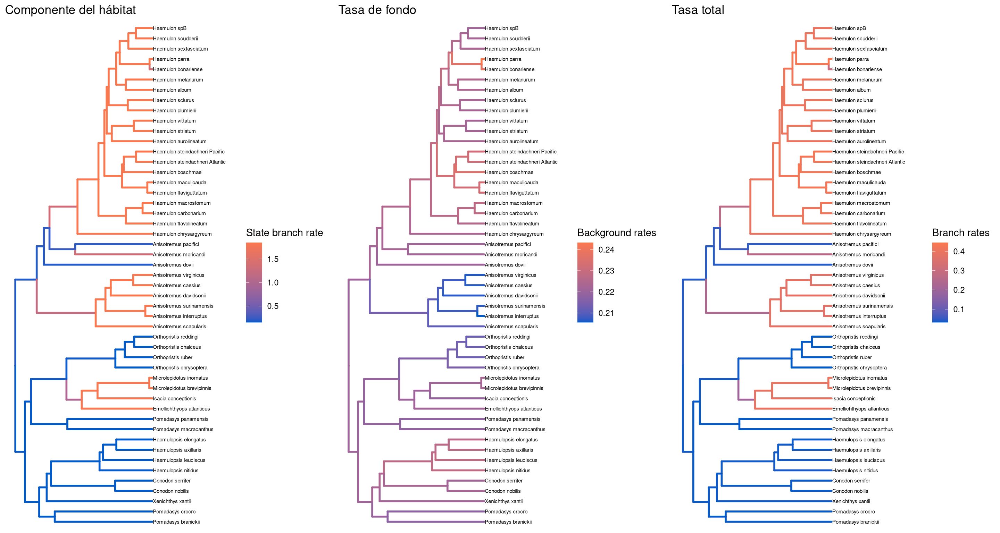

simple <- leer_resultados(file.path(carpeta_salida, "state_dependent_BM.log"))
simple$R <- simple$zeta_estado_1 / simple$zeta_estado_0
resumen_simple <- unname(quantile(simple$R, c(0.025, 0.5, 0.975)))Estimación de tasas brownianas dependientes del estado
Modelos brownianos dependientes del estado y variación de fondo
Introducción
En un modelo de movimiento browniano de tasa constante, un carácter continuo evoluciona con una sola tasa de acumulación de varianza, \(\sigma^2\), en todas las ramas del árbol. Sin embargo, algunas preguntas biológicas requieren evaluar si esa tasa se relaciona con otro carácter, como el hábitat, la dieta o el sistema de apareamiento.
Por ejemplo, podemos preguntarnos si el tamaño corporal evoluciona a distinta tasa en peces que viven en arrecifes y en peces de otros hábitats. Para responder, necesitamos modelar tanto el carácter continuo como la historia evolutiva del hábitat, que es un carácter discreto.
Analizaremos datos de Haemulidae para estudiar esa asociación. Primero ajustaremos un BM cuya tasa depende del hábitat. Después incorporaremos variación de fondo entre linajes, para permitir diferencias de tasa adicionales a las asociadas con ese carácter.
Datos
Trabajaremos con un árbol fijo de 49 taxones, una matriz de nueve caracteres continuos y un carácter discreto de hábitat. Los nombres de los taxones coinciden entre los tres archivos.
| Archivo | Contenido |
|---|---|
haemulidae.nex |
Árbol filogenético enraizado |
haemulidae_trophic_traits.nex |
Matriz de caracteres continuos |
haemulidae_habitat.nex |
Hábitat codificado como 0 o 1 |
El hábitat está codificado como:
- 0: fuera de arrecife, con 18 especies.
- 1: arrecife, con 31 especies.
El primer carácter corresponde al logaritmo del tamaño corporal. Conservaremos los valores en la escala suministrada. Los archivos no declaran por sí solos la unidad original de tamaño.
| Índice | Carácter |
|---|---|
| 1 | Tamaño corporal |
| 2 | Masa del aductor |
| 3 | Proceso ascendente |
| 4 | Longitud de las branquiespinas |
| 5 | Anchura del ojo |
| 6 | Longitud bucal |
| 7 | Anchura bucal |
| 8 | Altura de la cabeza |
| 9 | Longitud de la cabeza |
Descarga de archivos
📥 Descargar árbol filogenético
📥 Descargar matriz de caracteres continuos
La distancia entre la raíz y las puntas es aproximadamente 1 en el árbol suministrado. Por eso expresaremos las tasas por unidad de longitud del árbol. No utilizaremos millones de años sin comprobar la calibración y el reescalamiento originales.
Modelos de movimiento browniano
En movimiento browniano, la varianza del cambio aumenta con la tasa y con el tiempo:
\[ \operatorname{Var}(\Delta Y)=\sigma^2t. \]
Una tasa \(\sigma^2\) mayor permite cambios más grandes en ambas direcciones. No significa que el tamaño corporal necesariamente aumente.
Compararemos estos modelos:
| Modelo | Qué permite |
|---|---|
| Dependiente del hábitat | Tasas diferentes entre los dos hábitats |
| Con variación de fondo | El efecto del hábitat y diferencias adicionales de tasa entre linajes |
La comparación permite evaluar si la diferencia entre hábitats se mantiene al incorporar otras diferencias de tasa entre linajes.
Parámetros e historia del hábitat
La tasa de una rama depende de la fracción de tiempo que permanece en cada estado, no únicamente del hábitat de la especie en su punta. Con dos hábitats:
\[ \sigma_i^2 = \beta\left[\tau_i(0)\zeta_0+\tau_i(1)\zeta_1\right], \qquad \operatorname{Var}(\Delta Y_i)=t_i\sigma_i^2. \]
Aquí, \(\tau_i(0)+\tau_i(1)=1\). RevBayes estima las historias del hábitat junto con los parámetros del carácter continuo, por lo que las tasas incorporan incertidumbre sobre esas historias.
| Variable en el script | Significado |
|---|---|
lambda |
Escala de velocidad del proceso de cambio del hábitat |
Q |
Matriz relativa del modelo Mk simétrico para el hábitat |
X |
Estados e historia del hábitat; los estados observados se fijan con clamp |
beta |
Escala global de varianza del BM sin variación de fondo |
zeta[1], zeta[2] |
Multiplicadores relativos de los estados 0 y 1, con media 1 |
state_branch_rate |
Promedio de los multiplicadores del hábitat ponderado por el tiempo en cada estado |
beta_root |
Escala inicial de varianza de fondo del segundo modelo |
background_rates |
Tasas de fondo que se heredan y pueden cambiar entre ramas |
branch_rates |
Tasas efectivas de varianza por rama |
razon_tasas |
Cociente arrecife / fuera de arrecife |
En estos scripts, beta y zeta ya representan una tasa de varianza y sus multiplicadores: no se elevan otra vez al cuadrado. A dnPhyloBrownianREML se le proporciona la raíz cuadrada de branch_rates, como exige su parametrización.
Las priors propuestas son opciones iniciales. Sus límites dependen de la escala del carácter y del árbol; conviene revisar sensibilidad y si las muestras se acumulan cerca de esos límites.
Comprobación de las cadenas
Los scripts realizan 5 000 generaciones iniciales de ajuste y después guardan muestras durante 50 000 generaciones, cada 10 generaciones. Esta longitud es un punto de partida: el tiempo de ejecución y la convergencia pueden diferir entre modelos.
Antes de interpretar las densidades, abre los .log en Tracer y revisa las trazas de Posterior, Likelihood, lambda, zeta_estado_0, zeta_estado_1 y razon_tasas; revisa también beta o beta_root y, para el segundo modelo, num_rate_changes. Busca trazas estables, mezcla adecuada y un tamaño efectivo de muestra suficiente (como referencia inicial, ESS mayor que 200 para los parámetros de interés). Repite cada modelo en sesiones independientes, con nombres de salida distintos, y comprueba que los resúmenes concuerden. Si no ocurre, prolonga las cadenas y revisa las propuestas y las priors.
La fase burnin() de los scripts no se registra como posterior. El descarte adicional del 25 % que usamos abajo se aplica a las muestras guardadas durante run() y debe ajustarse según las trazas.
Modelo dependiente del hábitat
Guarda este bloque como mcmc_state_dependent_BM.Rev. La tasa de fondo es común a todas las ramas y el hábitat modifica la tasa mediante zeta.
Script de RevBayes
# RUTAS DE ENTRADA Y SALIDA
# Modifica estas rutas segun la ubicacion de tus archivos.
# Sin una carpeta delante, RevBayes usa su directorio de trabajo.
archivo_arbol <- "haemulidae.nex"
archivo_caracteres <- "haemulidae_trophic_traits.nex"
archivo_habitat <- "haemulidae_habitat.nex"
archivo_log <- "state_dependent_BM.log"
# 1. DATOS Y OBJETOS DE TRABAJO
# Analizamos un solo caracter: 1 = logaritmo del tamano corporal.
# Los indices de caracteres en RevBayes comienzan en 1.
character <- 1
T <- readTrees(archivo_arbol)[1]
tree <- T
ntips <- tree.ntips()
nbranches <- 2 * ntips - 2
cont <- readContinuousCharacterData(archivo_caracteres)
cont.excludeAll()
cont.includeCharacter(character)
disc <- readDiscreteCharacterData(archivo_habitat)
num_disc_states <- disc.getStateDescriptions().size()
moves = VectorMoves()
monitors = VectorMonitors()
# 2. HISTORIA DEL HABITAT: MODELO Mk SIMETRICO
# Q contiene tasas relativas; lambda escala la velocidad del proceso.
# La prior loguniforme esta acotada: no es una prior sin informacion.
Q <- fnJC(num_disc_states)
lambda ~ dnLoguniform(1e-3, 2)
moves.append(mvScale(lambda, weight=1.0))
# X incluye los estados ancestrales y los cambios dentro de las ramas.
# clamp fija los estados observados de las puntas, no toda la historia.
X ~ dnPhyloCTMCDASiteIID(tree, Q, branchRates=lambda, type="Standard", nSites=1)
X.clamp(disc)
# Estas propuestas actualizan historias compatibles con las puntas.
moves.append(mvCharacterHistory(ctmc=X, qmap_site=Q, graph="node", proposal="rejection", weight=20.0))
moves.append(mvCharacterHistory(ctmc=X, qmap_site=Q, graph="branch", proposal="rejection", weight=20.0))
for (i in 1:nbranches) {
num_changes[i] := sum(X.numCharacterChanges(i))
}
total_num_changes := sum(num_changes)
# 3. MULTIPLICADORES DEL HABITAT
# proportional_zeta suma 1. zeta tiene media 1: para dos estados suma 2.
# concentration = 1 da una Dirichlet uniforme sobre las proporciones.
concentration <- 1.0
proportional_zeta ~ dnDirichlet(rep(concentration, num_disc_states))
moves.append(mvBetaSimplex(proportional_zeta, weight=1.0))
zeta := proportional_zeta * num_disc_states
# El indice 1 del vector corresponde al estado observado 0; el 2, al 1.
zeta_estado_0 := zeta[1]
zeta_estado_1 := zeta[2]
razon_tasas := zeta_estado_1 / zeta_estado_0
# Cada rama puede pasar parte de su tiempo en cada habitat.
# relativeTimeInStates(i,1) devuelve esas fracciones para el caracter 1.
for (i in 1:nbranches) {
state_branch_rate[i] := sum(X.relativeTimeInStates(i,1) * zeta)
}
# 4. ESCALA GLOBAL DE VARIANZA
# beta ES una tasa de varianza: no hay que volver a elevarla al cuadrado.
beta ~ dnLoguniform(1e-3, 1)
moves.append(mvScale(beta, weight=1.0))
tasa_0 := beta * zeta_estado_0
tasa_1 := beta * zeta_estado_1
branch_rates := state_branch_rate * beta
# 5. MODELO DEL CARACTER CONTINUO
# branch_rates contiene tasas de VARIANZA. Esta funcion recibe sus raices.
Y ~ dnPhyloBrownianREML(tree, branchRates=branch_rates^0.5)
Y.clamp(cont)
mymodel = model(Y)
# 6. REGISTRO Y MUESTREO
# Cada 10 generaciones se guarda una muestra en el archivo .log.
monitors.append(mnModel(filename=archivo_log, printgen=10))
monitors.append(mnScreen(printgen=1000, beta, zeta, razon_tasas, total_num_changes))
mymcmc = mcmc(mymodel, monitors, moves, nruns=1)
# Fase inicial de ajuste de las propuestas; no se guarda como posterior.
mymcmc.burnin(generations=5000, tuningInterval=200)
# Longitud inicial de la cadena; revisar diagnosticos antes de interpretar.
mymcmc.run(generations=50000)
mymcmc.operatorSummary()
q()Lectura de la salida en R
Lee state_dependent_BM.log desde la carpeta de resultados. La variable carpeta_salida identifica su ubicación y puede sustituirse por una ruta propia.
Resultados: tasas entre hábitats
Cada curva representa la incertidumbre posterior de una tasa evolutiva, no la distribución de tamaños de los peces. La tasa se expresa en la escala del carácter y por unidad de longitud del árbol.
if (!all(c("tasa_0", "tasa_1") %in% names(simple))) {
stop("El primer archivo debe contener beta para calcular las tasas por hábitat.")
}
tasas <- rbind(
data.frame(tasa = simple$tasa_0, habitat = "Fuera de arrecife"),
data.frame(tasa = simple$tasa_1, habitat = "Arrecife")
)
ggplot(tasas, aes(tasa, colour = habitat, fill = habitat)) +
geom_density(alpha = 0.15, linewidth = 0.9, bounds = c(0, Inf)) +
scale_colour_manual(values = c("Arrecife" = "#B46621", "Fuera de arrecife" = "#246A8A")) +
scale_fill_manual(values = c("Arrecife" = "#B46621", "Fuera de arrecife" = "#246A8A")) +
theme_minimal() +
labs(x = expression("Tasa de varianza " * sigma^2), y = "Densidad",
colour = "Hábitat", fill = "Hábitat")
Las curvas situadas hacia valores mayores corresponden a tasas más altas. La amplitud de cada distribución muestra la incertidumbre de su estimación.
Para resumir la diferencia, calcularemos una razón de tasas:
\[ R=\frac{\text{tasa en arrecife}}{\text{tasa fuera de arrecife}}. \]
| Valor de R | Interpretación |
|---|---|
| Mayor que 1 | Mayor tasa en arrecife |
| Menor que 1 | Mayor tasa fuera de arrecife |
| Igual a 1 | Tasas iguales |
Por ejemplo, \(R=3\) indica una tasa tres veces mayor en arrecife. No significa que los peces sean tres veces más grandes.
La mediana de la razón en este modelo es 12.65, con intervalo creíble de colas iguales del 95 % entre 4.79 y 32.65. Si el intervalo queda por encima de 1, la tasa en arrecife es mayor bajo este modelo; si incluye 1, hay incertidumbre sobre la dirección de la diferencia.
Modelo con variación de fondo
Guarda este bloque como mcmc_relaxed_state_dependent_BM.Rev. Incluye de nuevo la lectura de datos y la historia del hábitat para poder ejecutarlo por separado.
En este modelo se sustituye beta por una tasa de fondo que puede cambiar entre ramas. Para una misma tasa de fondo, el efecto relativo del hábitat sigue siendo zeta[2] / zeta[1]. El salto reversible de este script corresponde a cambios de fondo en ramas, y no a una comparación entre presencia y ausencia de efecto del hábitat.
Script de RevBayes
################################################################################
# BM dependiente del habitat en Haemulidae
# Adaptacion docente del tutorial y de los scripts de Michael R. May
# https://revbayes.github.io/tutorials/cont_traits/state_dependent_bm
# Ejecutar desde la carpeta que contiene data, scripts y output.
################################################################################
# 1. Leer el arbol y seleccionar el caracter continuo
character <- 1
T <- readTrees("haemulidae.nex")[1]
tree <- T
ntips <- tree.ntips()
nbranches <- 2 * ntips - 2
cont <- readContinuousCharacterData("haemulidae_trophic_traits.nex")
cont.excludeAll()
cont.includeCharacter(character)
# 0 = fuera de arrecife; 1 = arrecife
disc <- readDiscreteCharacterData("haemulidae_habitat.nex")
num_disc_states <- disc.getStateDescriptions().size()
moves = VectorMoves()
monitors = VectorMonitors()
# 2. Modelo de evolucion del habitat
Q <- fnJC(num_disc_states)
lambda ~ dnLoguniform(1e-3, 2)
moves.append(mvScale(lambda, weight=1.0))
# Aumento de datos para muestrear las historias del habitat
X ~ dnPhyloCTMCDASiteIID(tree, Q, branchRates=lambda,
type="Standard", nSites=1)
# Registrar los movimientos ANTES de clamp para compatibilidad.
# Discussion 894: github.com/revbayes/revbayes/discussions/894
moves.append(mvCharacterHistory(ctmc=X, qmap_site=Q,
graph="node", proposal="rejection", weight=20.0))
moves.append(mvCharacterHistory(ctmc=X, qmap_site=Q,
graph="branch", proposal="rejection", weight=20.0))
X.clamp(disc)
# Contabilizar cambios de habitat, distintos de los cambios de tasa de fondo
for (i in 1:nbranches) {
num_changes[i] := sum(X.numCharacterChanges(i))
}
total_num_changes := sum(num_changes)
# 3. Escala comun de la tasa de varianza
beta ~ dnLoguniform(1e-3, 1)
moves.append(mvScale(beta, weight=1.0))
# 4. Multiplicadores relativos de la tasa de varianza
concentration <- 1.0
proportional_zeta ~ dnDirichlet(rep(concentration, num_disc_states))
moves.append(mvBetaSimplex(proportional_zeta, weight=1.0))
# Con dos estados, zeta[1] + zeta[2] = 2
zeta := proportional_zeta * num_disc_states
zeta_estado_0 := zeta[1]
zeta_estado_1 := zeta[2]
ratio_state_1_0 := zeta_estado_1 / zeta_estado_0
# Componente del habitat ponderado por el tiempo en cada estado
for (i in 1:nbranches) {
state_branch_rate[i] := sum(X.relativeTimeInStates(i,1) * zeta)
}
# 5. Tasas absolutas por estado y tasa de cada rama
overall_rate := beta * zeta
tasa_estado_0 := beta * zeta_estado_0
tasa_estado_1 := beta * zeta_estado_1
branch_rates := state_branch_rate * beta
# branch_rates es una tasa de VARIANZA; la funcion recibe su raiz cuadrada
Y ~ dnPhyloBrownianREML(tree, branchRates=branch_rates^0.5)
Y.clamp(cont)
# 6. Modelo y monitores
mymodel = model(zeta)
monitors.append(mnModel(filename="output/state_dependent_BM.log",
printgen=10))
monitors.append(mnScreen(printgen=1000, beta, zeta, ratio_state_1_0,
total_num_changes))
# 7. Una cadena de demostracion
# Para la interpretacion final, repetir de forma independiente en otra carpeta.
mymcmc = mcmc(mymodel, monitors, moves, nruns=1)
mymcmc.burnin(generations=1000, tuningInterval=100)
mymcmc.run(generations=50000)
q()Resultados: efecto del hábitat con variación de fondo
Lee ahora relaxed_state_dependent_BM.log. La razón compara los hábitats manteniendo igual el componente de fondo; no es un cociente de tasas promedio de grupos de ramas.
fondo <- leer_resultados(file.path(carpeta_salida, "relaxed_state_dependent_BM.log"))
fondo$R <- fondo$zeta_estado_1 / fondo$zeta_estado_0
resumen_fondo <- unname(quantile(fondo$R, c(0.025, 0.5, 0.975)))ggplot(fondo, aes(R)) +
geom_density(colour = "#B46621", fill = "#B46621", alpha = 0.15,
linewidth = 0.9) +
scale_x_log10(breaks = c(0.1, 0.3, 1, 3, 10, 30, 100)) +
geom_vline(xintercept = 1, linetype = "dashed") +
theme_minimal() +
labs(x = "Razón de tasas: arrecife / fuera de arrecife (escala logarítmica)",
y = "Densidad")
Las etiquetas del eje siguen siendo valores de R. La mediana es 12.1, con intervalo creíble de colas iguales del 95 % entre 4.4 y 33.08. Los valores mayores que 1 indican una tasa mayor en arrecife.
Tasas por rama
Los tres paneles representan el mismo árbol. Cambia la variable utilizada para colorear sus ramas:
| Panel | Variable | Interpretación |
|---|---|---|
| Hábitat | state_branch_rate |
Multiplicador relativo según el tiempo que la rama pasa en cada hábitat |
| Fondo | background_rates |
Tasa de fondo heredada entre ramas, con posibles cambios adicionales |
| Total | branch_rates |
Producto del componente del hábitat y la tasa de fondo; determina la tasa de varianza del BM |
Esta figura utiliza relaxed_state_dependent_BM_MAP.tre, generado al terminar el segundo script. Se requieren también RevGadgets y gridExtra.
archivo_arbol <- file.path(carpeta_salida, "relaxed_state_dependent_BM_MAP.tre")
paquetes <- c("RevGadgets", "gridExtra")
disponibles <- vapply(paquetes, requireNamespace, logical(1), quietly = TRUE)
if (file.exists(archivo_arbol) && all(disponibles)) {
# Capturar el progreso de lectura para que no aparezca en la página.
invisible(capture.output(arbol_tasas <- RevGadgets::readTrees(archivo_arbol)))
state_rates <- RevGadgets::plotTree(
arbol_tasas, color_branch_by = "state_branch_rate",
tip_labels_size = 2, legend_x = 0.2
) + ggplot2::ggtitle("Componente del hábitat")
background_rates <- RevGadgets::plotTree(
arbol_tasas, color_branch_by = "background_rates",
tip_labels_size = 2, legend_x = 0.2
) + ggplot2::ggtitle("Tasa de fondo")
overall_rates <- RevGadgets::plotTree(
arbol_tasas, color_branch_by = "branch_rates",
tip_labels_size = 2, legend_x = 0.2
) + ggplot2::ggtitle("Tasa total")
figura_tasas <- gridExtra::arrangeGrob(
state_rates, background_rates, overall_rates, nrow = 1
)
grid::grid.draw(figura_tasas)
# Opcional: guardar la figura en PDF.
# ggplot2::ggsave(file.path(carpeta_salida, "relaxed_state_dependent_BM.pdf"),
# plot = figura_tasas, width = 15, height = 8)
} else {
if (!file.exists(archivo_arbol)) {
cat("No se encontró el árbol resumen: ", archivo_arbol, "\n")
}
if (!all(disponibles)) {
cat("Paquetes necesarios: ", paste(paquetes[!disponibles], collapse = ", "), "\n")
}
}
Lee cada panel con su propia leyenda. El componente del hábitat es relativo; el fondo y la tasa total están en la escala de varianza. Una rama con tasa alta permite cambios más dispersos, sin indicar por sí sola un aumento del tamaño corporal. El árbol resumen no muestra toda la incertidumbre posterior.
Comparación final de los modelos
La siguiente tabla reúne únicamente el contraste central entre hábitats. Compara la mediana y el intervalo creíble de colas iguales del 95 % de R.
modelos <- list("Dependiente del hábitat" = simple$R,
"Con variación de fondo" = fondo$R)
resumen <- t(vapply(modelos, quantile, numeric(3), probs = c(0.025, 0.5, 0.975)))
colnames(resumen) <- c("Límite inferior 95 %", "Mediana", "Límite superior 95 %")
knitr::kable(resumen, digits = 2, caption = "Razón de tasas entre hábitats")| Límite inferior 95 % | Mediana | Límite superior 95 % | |
|---|---|---|---|
| Dependiente del hábitat | 4.79 | 12.65 | 32.65 |
| Con variación de fondo | 4.40 | 12.10 | 33.08 |
Si el intervalo queda por encima de 1 en ambos modelos, la tasa en arrecife es mayor bajo ambos. Si incluye 1, hay incertidumbre sobre la dirección de la diferencia; no demuestra igualdad. Al añadir variación de fondo, revisa si la razón cambia y si la conclusión sobre el hábitat se mantiene. La asociación estimada no demuestra causalidad.
Referencias
May, M. R. State-Dependent Brownian Rate Estimation.
May, M. R. y Moore, B. R. (2020). A Bayesian Approach for Inferring the Impact of a Discrete Character on Rates of Continuous-Character Evolution in the Presence of Background-Rate Variation. Systematic Biology, 69, 530–544. DOI 10.1093/sysbio/syz069.